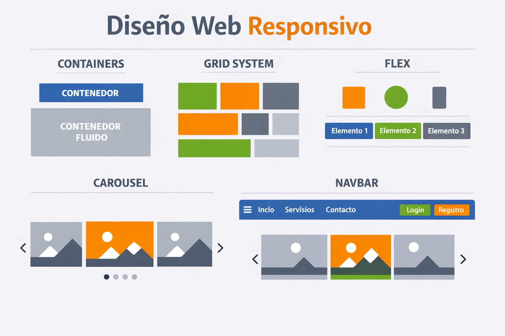

Diseño Web Responsivo
El diseño web responsivo permite adaptar el diseño de una página web a diferentes tamaños de pantalla y dispositivos.
Kembly Quesada

En la era digital actual, donde la variedad de dispositivos y tamaños de pantalla prolifera, el diseño web responsivo se ha convertido en una herramienta fundamental para crear experiencias de usuario óptimas en cualquier contexto. Esta tarea de investigación tiene como objetivo sumergirte en los pilares del diseño web responsivo, explorando conceptos como Viewport, Media Queries, Grid-View y la poderosa herramienta Bootstrap 5.
El diseño web responsivo permite adaptar el diseño de una página web a diferentes tamaños de pantalla y dispositivos.
El viewport es el área visible de una página web en un dispositivo móvil o tableta.
Las Media Queries son una característica de CSS que permite aplicar estilos diferentes según las características del dispositivo o la pantalla.
Bootstrap 5 es un framework de desarrollo web que facilita la creación de diseños responsivos y modernos.
Componentes esenciales:


